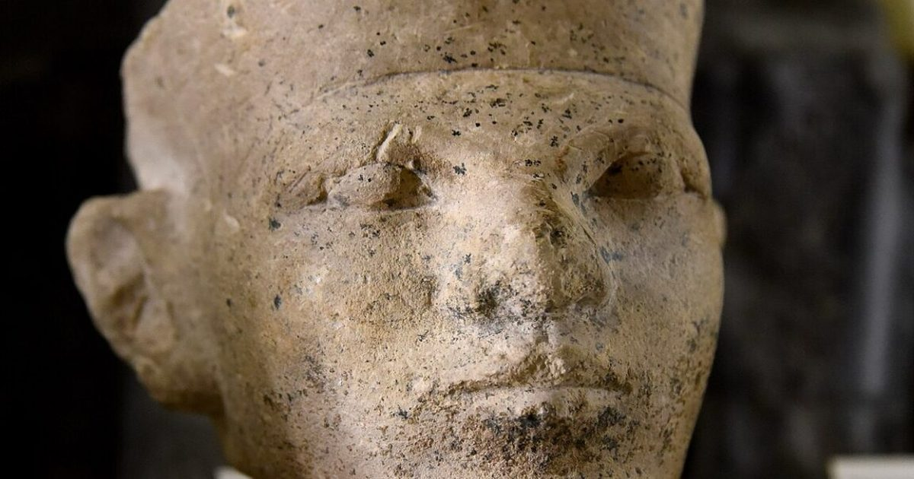

Новые судебно-медицинские доказательства подтверждают египетскую «жертву фиксатора»
Свежий анализ массовых захоронений Первой династии находит признаки смертельной травмы тупым предметом на 39 процентах черепов

Свежий анализ массовых захоронений Первой династии находит признаки смертельной травмы тупым предметом на 39 процентах черепов